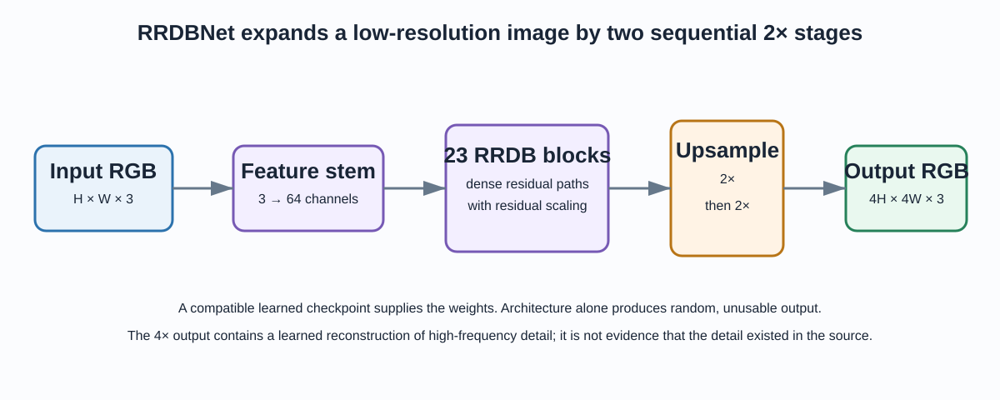
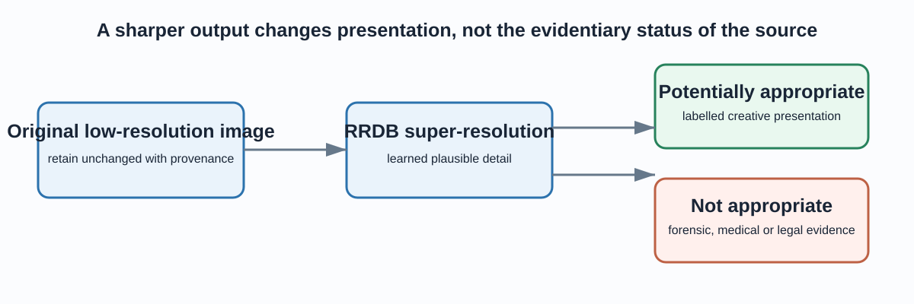

The useful distinction
Interpolation makes an image larger; learned super-resolution makes it larger and uses a trained image prior to synthesise plausible textures and edges. That can improve visual presentation, but it cannot prove that a generated pattern existed in the original image.
Architecture and scale

Two explicit 2× upsampling stages set the model’s 4× spatial scaling contract.
Converts RGB to 64 learned feature maps.
Stacked dense residual feature processing with residual scaling.
Nearest-neighbour 2× stages followed by convolution.
Supplies the learned weights; architecture code alone is not an enhancer.
The safe-use boundary

Always retain the original and record model, checkpoint, settings and output provenance.
Run the supported inference path
src/run_esrgan.py performs preflight checks for a compatible checkpoint and valid input folder, then selects CPU automatically when CUDA is unavailable. It writes new *_x4.png files and never replaces inputs.
python -m pip install -r requirements.txt python -m pytest -q python -m src.run_esrgan --device auto
A compatible authorised checkpoint is required at models/RRDB_ESRGAN_x4.pth. The repository deliberately does not commit this weight file.
What verification means here
| Verified locally | Not claimed without a benchmark |
|---|---|
| RRDBNet maps a small RGB tensor from H × W to 4H × 4W. | Visual quality, PSNR, SSIM or LPIPS. |
| CPU mode works and missing prerequisites produce clear errors. | Output quality from an absent checkpoint. |
| Input/output paths are explicit and no input is overwritten. | Any upstream published score. |
A credible quality evaluation needs paired known-HR images, a documented LR degradation procedure, held-out data, baseline comparisons and failure reporting.